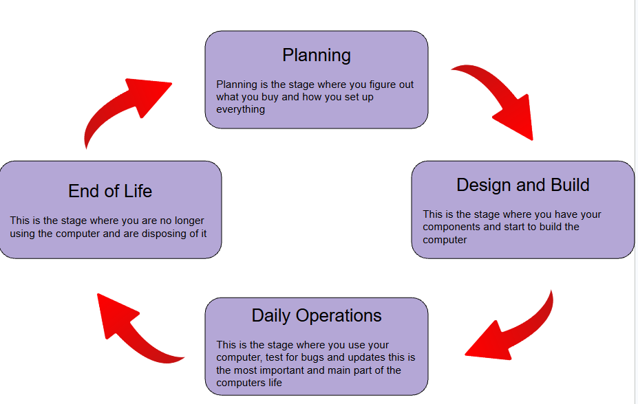

In this webpage I will be talking about computer systems.I will talk about what support is needed for the computer in this category I will also talk about the life cycle of the computer from when it is first bought to all the way when it being thrown away. I will talk about how the system changes so the support needs to change along with the system to catch up with all the information meaning a lot of staff will need to do certain training and bug fixing. I will also talk about the pros, cons, and compromises discussing the balance a business must find when offering support.

This website was produced by Kuba